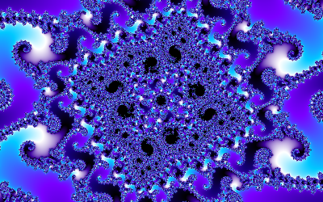
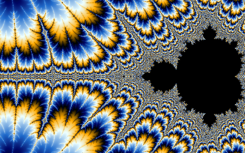
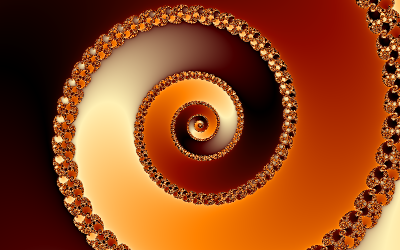
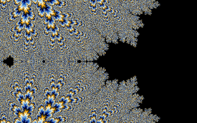
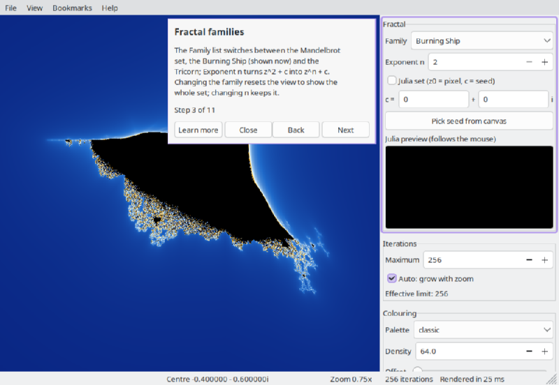

Throughout this guide, links that begin with Try it act on the main window instead of opening a page: they change the view, switch the fractal or palette, start a flight, and so on. The help window stays where it is, so keep it beside the main window. Help > Back to where I was returns to the view you had before the last Try it link or demo.
Help > Demos plays animated flights on the main window. A flight zooms at about one doubling per second and lands where it was heading, so you can carry on exploring from there. While it plays, the first field of the status bar shows its progress.
To stop a flight, press Esc or any other key, click or roll the wheel on the picture, change a setting, or choose Help > Demos > Stop demo. Deep flights render coarser frames on slower machines, but they always take the same time.
 |
Dive into Seahorse Valley From the whole set down to a minibrot at zoom 1e13. On the way the status bar switches to deep rendering. Try it: play the flight |
 |
The minibrot on the antenna Along the real axis to the little copy of the set at -1.75, then on to the copy on its own antenna. Try it: play the flight |
 |
Elephant Valley spirals Into the spirals on the right-hand side of the set, to zoom 1e7. Try it: play the flight |
 |
The Feigenbaum cascade Down the real axis into the point where the period-doubling pattern repeats itself at every scale. Try it: play the flight |
| A walk around the Julia sets The Julia set morphs as its constant travels once around the circle |c| = 0.7885. Try it: play the flight | |
| Palette sweep Seahorse Valley while the palette offset runs through one full cycle. Try it: play the flight |

Help > Take a tour walks through the window in eleven steps. Each step points at one part of the window, explains it and performs the action it describes: it zooms into Seahorse Valley, switches to the Burning Ship, opens a Julia set, changes the palette, turns the orbit overlay on, adds an example bookmark, opens the Save image dialog and shows a deep view. Use Next and Back at your own pace; Learn more opens the page of this guide about the current step. Close (or Esc) ends the tour at any point and puts back the view, the overlay and the bookmark list you had; so does the last step.